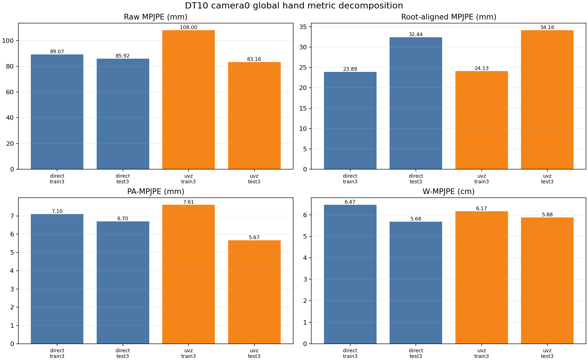
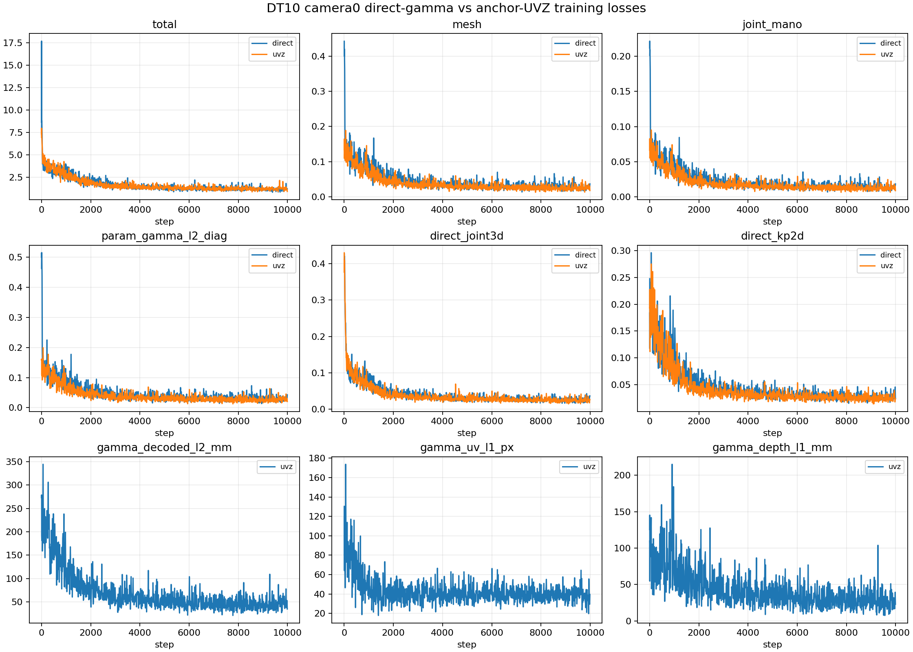
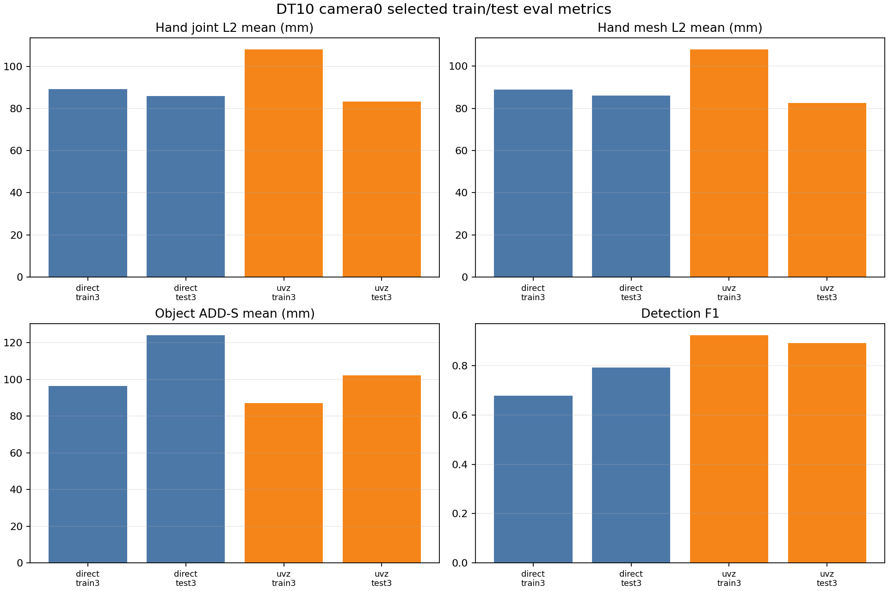
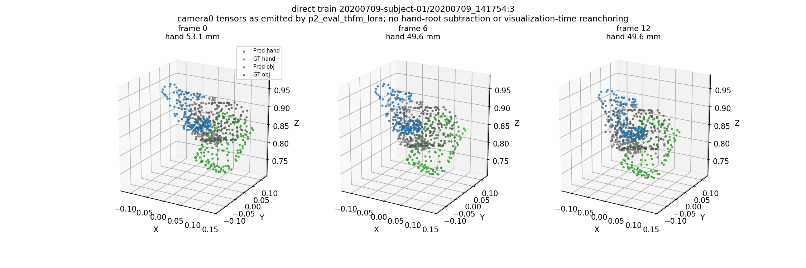
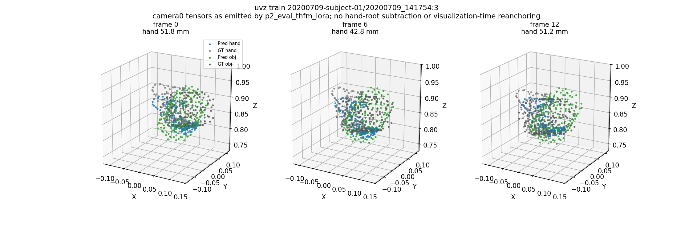
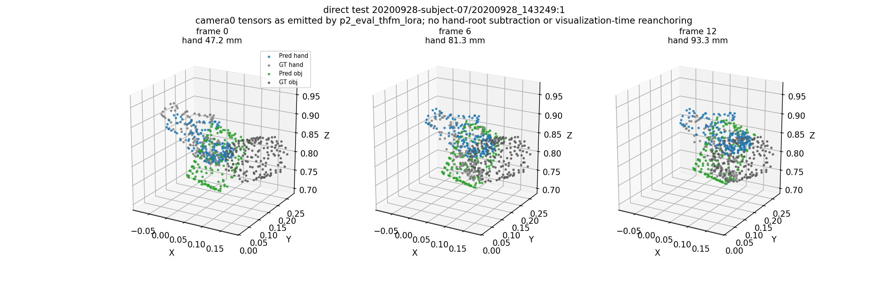
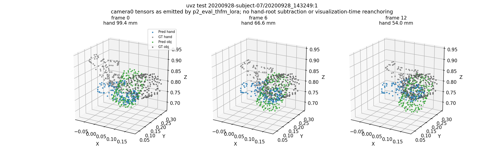

Evaluate completed DT10 camera0 direct-gamma and anchor-UVZ checkpoints on selected train/test clips with train-matched coordinate settings, then publish loss curves, metrics, and visualizations.
| Task | Status | Commit | What landed |
|---|---|---|---|
| P0 | PASS | Confirmed pt-rmh6erh0 and pt-g51ayqs4 reached SUCCEEDED, parsed history.json, and verified final checkpoint trainable fields including joint heads. | |
| P1 | PASS | Ran camera0 train/test clip evals for direct and UVZ using the same GT cache, clip length, n_max, and checkpoint settings as training. | |
| P2 | PASS | Generated loss curves, metrics summaries, raw metric sidecars, and world-space visualization PNGs for train/test clips. | |
| P3 | PASS | Rendered RGB overlay MP4s plus 3D playback and 3D turntable MP4s for the same selected train/test clips. | |
| P4 | PASS | Backfilled global hand metrics from predictions.pt: raw/root-aligned/PA MPJPE, WA/W-MPJPE, gamma and orientation diagnostics. |
On test3 UVZ joint L2 is 83.16 mm vs direct 85.92 mm and F1 is 0.892 vs 0.793; on train3 UVZ joint L2 is worse at 108.00 mm vs direct 89.07 mm.
Direct ran with 8 GPUs; UVZ ran with 4 GPUs after the 8GPU submission hit ACP quota 429. Treat this as a useful contrast, not the final fair ablation.
Both final checkpoints include all expected trainable prefixes, including direct joint heads and the model-specific gamma head.
Remote generated frames using dataset access and torch; local ffmpeg encoded H.264 mp4 assets, then the videos were synced back to the remote artifact directory.
Selected evals have raw MPJPE around 83-108 mm, but PA-MPJPE is about 5.67-7.61 mm and root-aligned MPJPE is about 23.9-34.2 mm.
| SHA | Type | Subject |
|---|---|---|
| fa775e7 | remote-training | pass grad sanitation to full anchor run |
| a65464b | remote-eval | load split direct uvz eval heads |
| 1d607e6 | remote-eval | evaluate with checkpoint vae source |
| 8798c92 | remote-eval | run eval from active worktree |
| 2c58a60 | remote-eval | skip legacy gps in static eval |
| 9857e68 | remote-eval | handle disabled gps eval sample |
| Aspect | Current state |
|---|---|
| Direct checkpoint | pt-rmh6erh0, 8GPU, final.pt step=10000, gamma_head present, 452 trainable keys |
| UVZ checkpoint | pt-g51ayqs4, 4GPU, final.pt step=10000, gamma_uvz_head present, 452 trainable keys |
| Eval contract | camera0 v3.6 cache, clip_len=13, n_max=2, final checkpoints, no hand-root subtraction |
| Artifacts | metrics_summary.csv/json, raw metrics/manifests, loss plot, metric plot, four world-space PNGs |
| Video assets | 12 mp4 files: 4 RGB overlays, 4 3D playbacks, 4 3D turntables |
| Global metrics | Added eval_global_metrics_summary.csv/json, per-eval global metric JSON, and decomposition plot. |
| Task | Priority | What's needed |
|---|---|---|
| P1 | P1 | Optionally rerun UVZ as 8GPU if an exactly GPU-matched fair comparison is required. |
Posthoc metrics are computed from the same predictions.pt records using the a8c7737 eval_hand_metrics.py contract on matched active hands. This adds the decomposition metrics that raw L2 alone misses.
| Eval | Raw MPJPE mm | Root-aligned mm | PA-MPJPE mm | WA-MPJPE cm | W-MPJPE cm | Gamma L2 mm | Orient deg |
|---|---|---|---|---|---|---|---|
| direct_train3 | 89.07 | 23.89 | 7.10 | 2.88 | 6.47 | 86.99 | 15.90 |
| direct_test3 | 85.92 | 32.44 | 6.70 | 2.42 | 5.68 | 85.36 | 30.18 |
| uvz_train3 | 108.00 | 24.13 | 7.61 | 3.10 | 6.17 | 111.18 | 16.39 |
| uvz_test3 | 83.16 | 34.16 | 5.67 | 2.44 | 5.88 | 78.99 | 23.25 |
Raw per-eval global metric JSON files are included under 2026-05-10-session-summary-dt10-camera0-direct-uvz-eval-publish/eval_raw/*_global_metrics.json.

All evals use the camera0 v3.6 GT cache, clip_len=13, n_max=2, checkpoint final.pt, and the same selected train3/test3 manifests.
| Eval | Joint L2 mm | Mesh L2 mm | Obj ADD-S mm | Det F1 |
|---|---|---|---|---|
| direct_train3 | 89.07 | 89.00 | 96.36 | 0.678 |
| direct_test3 | 85.92 | 86.16 | 124.12 | 0.793 |
| uvz_train3 | 108.00 | 107.98 | 87.08 | 0.925 |
| uvz_test3 | 83.16 | 82.67 | 102.09 | 0.892 |
Raw metrics and manifests are included under 2026-05-10-session-summary-dt10-camera0-direct-uvz-eval-publish/eval_raw/.


Projected predicted/GT hand and object point clouds on original DexYCB RGB frames. Blue/orange are predictions; green/light gray are GT.
World-space 3D playback uses the same camera0 visualization tensors as the static PNG panels.
Mid-frame 3D turntable views for inspecting spatial alignment from multiple azimuths.
Visualization tensors come directly from p2_eval_thfm_lora; no hand-root subtraction or visualization-time reanchoring is applied.




Paste this into a new Claude Code session:
Read https://haonanhe.github.io/HOI3R-project-tracking/updates/2026-05-10-session-summary-dt10-camera0-direct-uvz-eval-publish.json and continue from tasks_pending[0] (P1 [P1]: Optionally rerun UVZ as 8GPU if an exactly GPU-matched fair comparison is required.). Context: branch feat/dcf-anchor-uvz-static@9857e689725f56584a2bba61bf82faa6ed8164de; worktree /mnt/afs/haonan/hoi3r/HOI3R/.worktrees/feat-dcf-anchor-uvz-static.